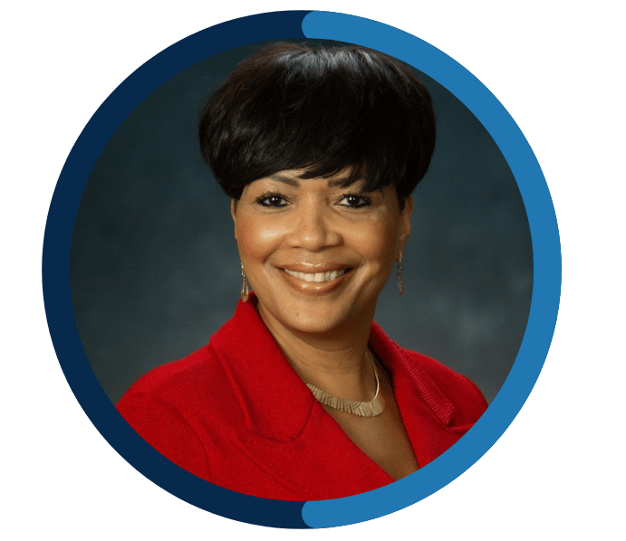
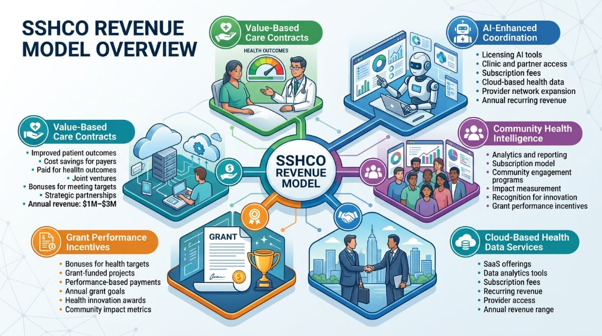
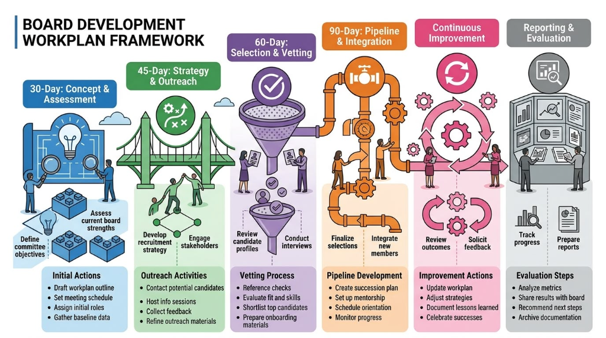

The three of us — Selena King, Brian Alexander, and Guy Fuller — have seen enough of this organization's work to know exactly what would be lost if SSHCO's funding were to expire without a clear path forward. We are not here to manage a sunset. We are here to prevent one. The sustainability of SSHCO is not a financial abstraction — it is a direct expression of our commitment to the South Side residents who have come to rely on this organization for the care, navigation, and support that no other single entity in their lives provides. With less than twelve months of current funding remaining, this committee is prepared to move with the clarity and urgency that this moment requires.
The Funding Cliff: SSHCO's current state transformation funding expires within one year. This committee's work must close meaningful commitments across four coordinated funding tracks before that date. Waiting for a single large grant or a single anchor partner is not a strategy — it is a risk. Our approach must be diversified, parallel, disciplined, and execution-focused.
The foundation of everything we do is a compelling, data-driven, and emotionally resonant case for support. Before we approach a single foundation, corporation, health system, or managed care partner, we must ensure that our materials are sharp, our impact narrative is tight, and our numbers are current. The story we have to tell is genuinely powerful: a collaborative of 13 safety-net healthcare providers serving 15 zip codes, connecting thousands of Medicaid-enrolled and uninsured residents not just to doctors but to food, housing, transportation, and the social scaffolding that accounts for up to 70 percent of a person's health outcomes. We are not asking for charity. We are offering proven infrastructure in exchange for partnership.
Our work is organized around four parallel funding tracks, each requiring a distinct relationship strategy and a realistic timeline to commitment. Our goal is not to find one savior funder. It is to build a diversified revenue base that reduces SSHCO's vulnerability to the kind of funding disruption we are currently facing, while using AI selectively to improve speed, discipline, and consistency. What follows is our map for doing exactly that.
We will work simultaneously across four distinct funding tracks. Each track has its own relationship logic, timeline, and revenue potential. None of them should wait for another to mature before we begin. We should assign primary ownership for each track among our three members, with all members supporting where their networks and relationships create openings.
We should assign primary track ownership at our next meeting. Each track requires consistent relationship management that a single owner can drive. All three members should review the full strategy, identify where their personal and professional networks create the strongest entry points, and come prepared to claim lead responsibility for at least one track.



Board development should be treated as a near-term sustainability priority. Major funders, health-system partners, and corporate sponsors will evaluate SSHCO’s governance strength as part of any serious long-term investment decision.
Our committee feels that SSHCO needs a board built around four essentials: community legitimacy, delivery expertise, institutional oversight, and strategic access to data, capital, and partnerships. This is not about filling seats. It is about building a board that can strengthen trust, improve governance, and support sustainable growth. AI can support this process by mapping candidate profiles against the target board model, surfacing publicly available background information on prospective members, flagging composition gaps, and preparing outreach briefs for each pipeline owner.
The following foundations represent our highest-priority grant opportunities, organized by urgency and strategic fit. We need to move quickly on the applications with imminent deadlines, while simultaneously opening relationship conversations with program officers at foundations where no open cycle is currently active. Grant funding alone will not close our sustainability gap, but it is our fastest and most straightforward near-term revenue source.
When approaching any foundation, we should lead with our outcomes data — the 80,000+ patient visits, the 7,000+ social service connections, and the 2,800+ rides — and follow immediately with the cost-savings argument. Program officers want to fund things that work. Our numbers prove that we do.
We should build a master grant calendar at our next meeting, mapping every deadline, required document, and LOI date for each of the active opportunities above. The Coleman Foundation, Polk Bros., and BCBSIL applications need to be assigned to a lead writer immediately. We should also identify whether SSHCO has existing relationships with any of these program officers and leverage those connections before submitting cold applications.
We need a formal tiered sponsorship program in place before we begin corporate conversations — so that when we sit across from a corporate giving officer, we can hand them a clear menu of options with defined benefits, recognition packages, and naming opportunities. The structure below is our starting proposal. We should finalize the benefits at each tier before any corporate outreach begins.
Before any corporate outreach begins, the committee needs to: finalize the sponsorship tier benefits document; identify which committee member has the strongest entry point at each target company; draft a customized one-page corporate partnership overview for AbbVie and Advocate specifically; and request AbbVie introduction through UChicago Medicine leadership within the next 30 days. We should have at least two corporate conversations open within 60 days.
Every nonprofit hospital in our collaborative is legally required under Section 501(r) of the Internal Revenue Code to document and report community benefit spending. Many health systems struggle to demonstrate that their community benefit dollars are creating measurable, population-level impact. SSHCO is precisely the kind of documented, scalable, outcomes-oriented program that a health system's community benefit officer needs to be able to include in their IRS 990 Schedule H report.
UChicago Medicine invested $715 million in documented community benefits in fiscal year 2024. The relationship between UChicago Medicine and SSHCO is already established and productive — with patient advocates actively connecting residents to our services and 7 in 10 referred patients enrolling. What we need to do is formalize SSHCO as a documented, named line item in UChicago Medicine's community benefit portfolio, with a multi-year financial commitment that reflects the measurable value we deliver. This is not a grant request — it is a community benefit partnership formalization conversation, and it should be held with UChicago Medicine's community benefit and legal leadership, not their philanthropy team.
The same conversation needs to happen with each of the other 12 partner organizations in our collaborative. Each of them has their own community benefit obligations and their own interest in being able to point to SSHCO's outcomes as evidence that their community benefit spending is working. Formalizing SSHCO across multiple community benefit portfolios simultaneously reduces our dependence on any single partner and permanently embeds us in the South Side healthcare accountability ecosystem.
"Formalizing our role in partner hospitals' community benefit portfolios is not just a funding strategy. It is a recognition strategy — one that permanently positions SSHCO as an indispensable part of the South Side's health infrastructure in ways that are very difficult to defund."
Our committee will attempt to identify the community benefit officer and legal counsel at each of the 13 SSHCO partner organizations and request introductory meetings to discuss formalizing SSHCO's role in their community benefit portfolios. UChicago Medicine should be our first meeting given the depth of our existing relationship. We will go into each meeting with a one-page summary of the measurable outcomes we deliver on behalf of that institution's community benefit obligations specifically.
We should also initiate a parallel conversation about earned revenue opportunities — not as a near-term fix for our funding gap, but as a 24–36 month development initiative that reduces our long-term dependence on any single source of philanthropic capital. SSHCO's community health worker training expertise, our shared technology platform, and our care coordination model represent intellectual capital that could be licensed or packaged for replication. Technical assistance fees, training and consulting revenue, and value-based payment arrangements with managed care organizations are all worthy of serious analysis.
We should also be candid with SSHCO's leadership about the staffing question. The scope of work outlined in this strategy — simultaneous engagement across four funding tracks, AI-enabled execution, board recruitment, and community benefit conversations across 13 institutions — is not realistically executable by a three-person volunteer committee alone alongside the operational demands of running the organization. We should make a recommendation to leadership about engaging a professional fundraising consultant or an interim development director with specific experience in health equity nonprofit fundraising. This investment will return multiples of its cost and will signal to major funders that SSHCO is institutionally serious about sustainability.